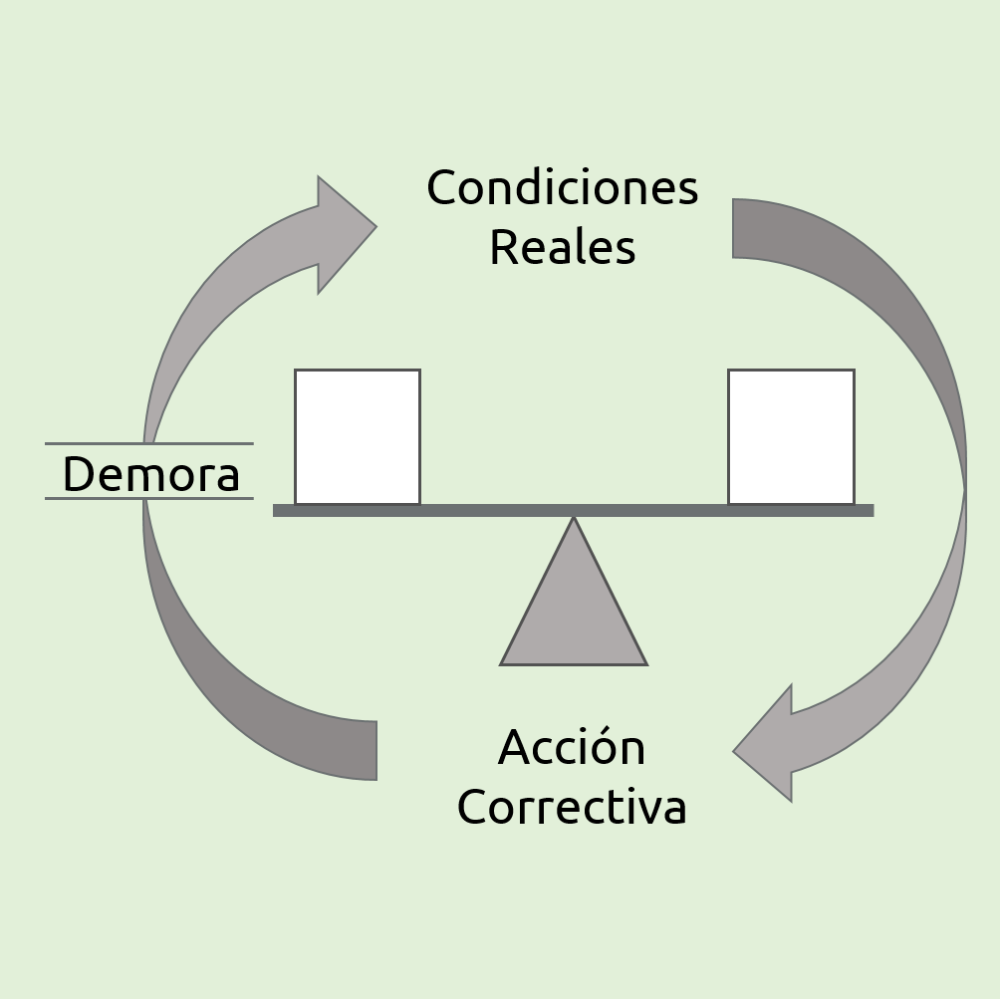
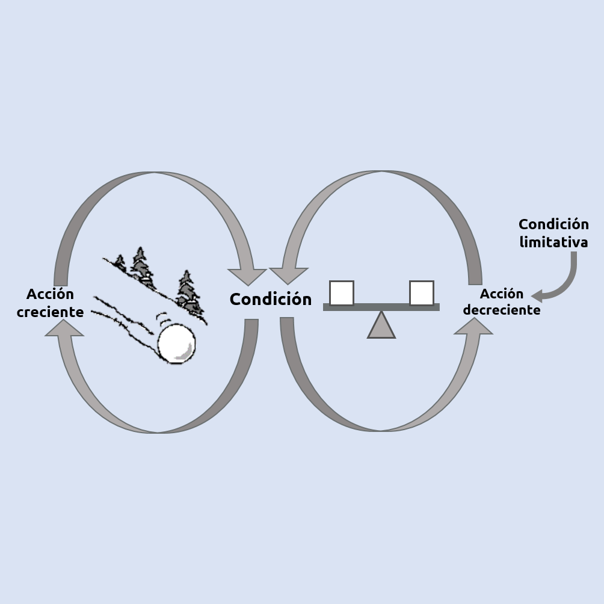
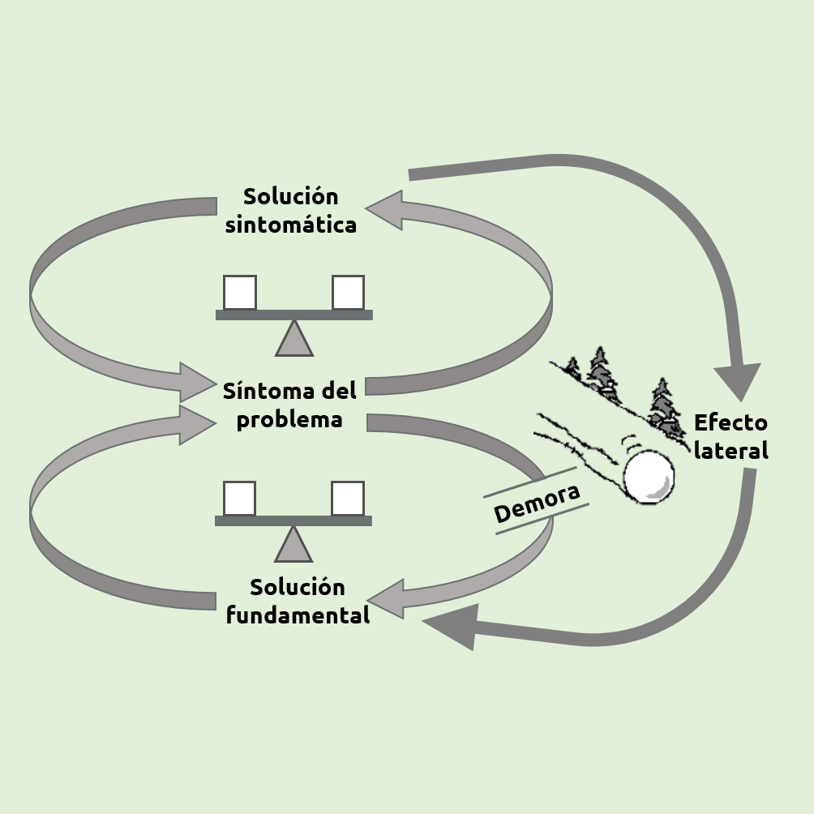
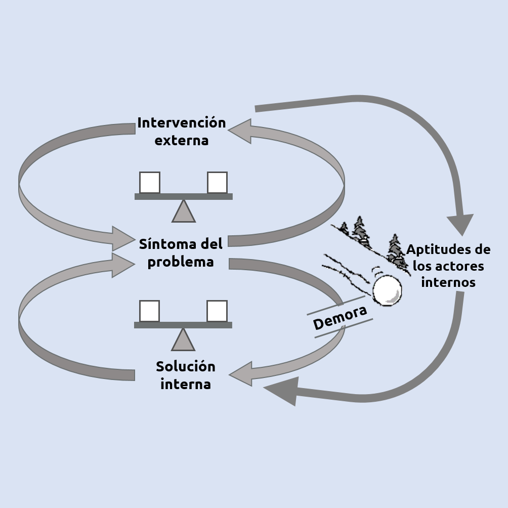
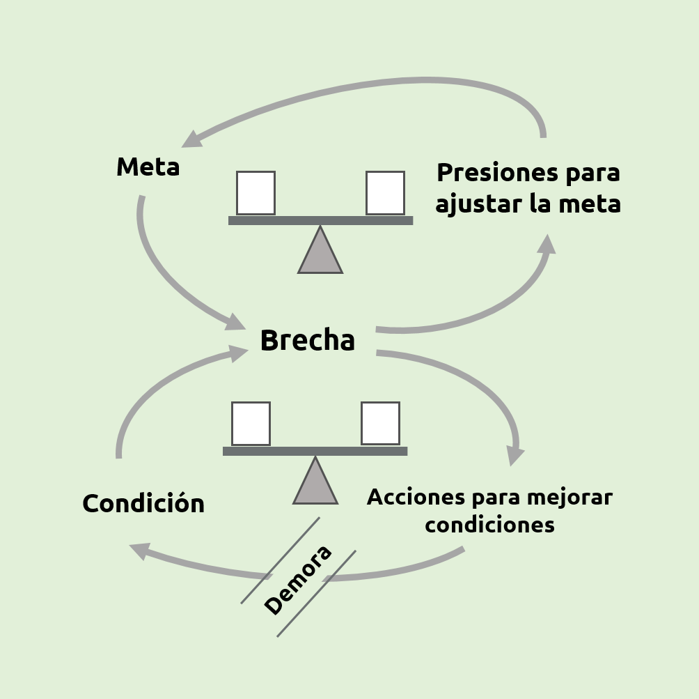
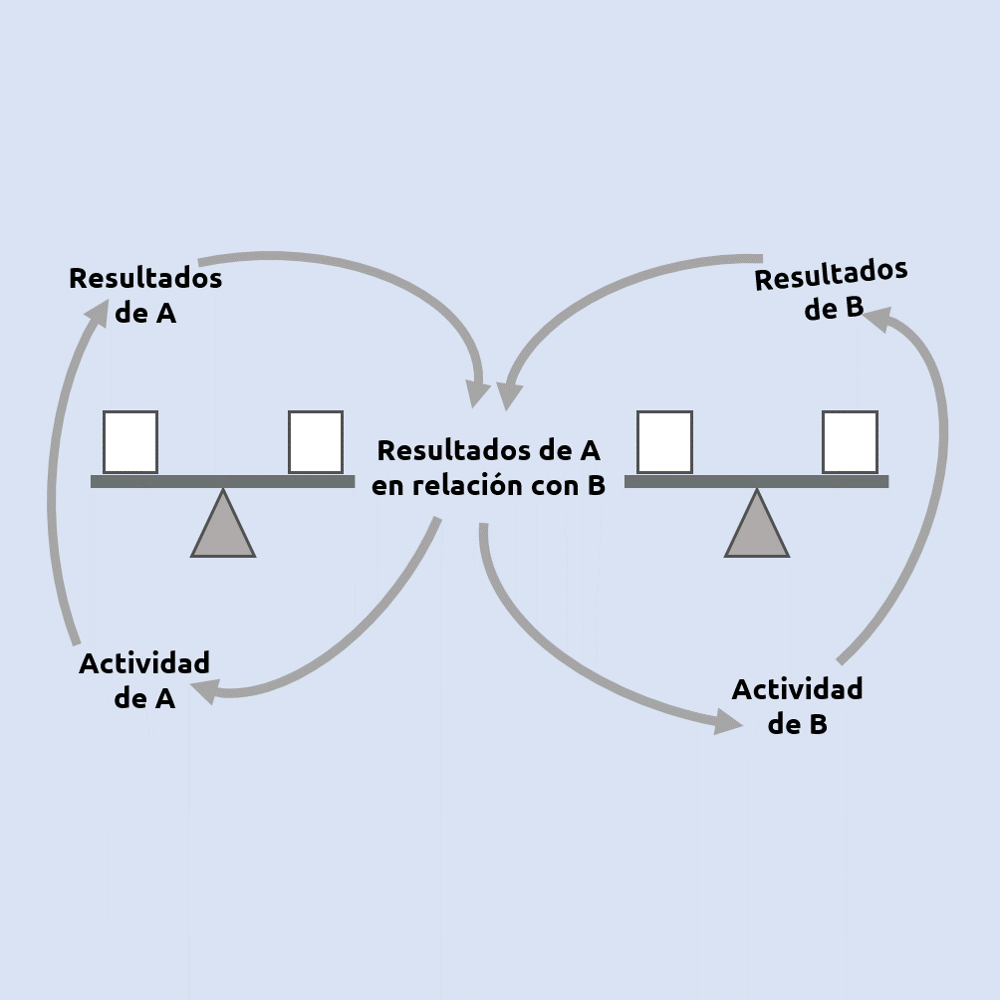
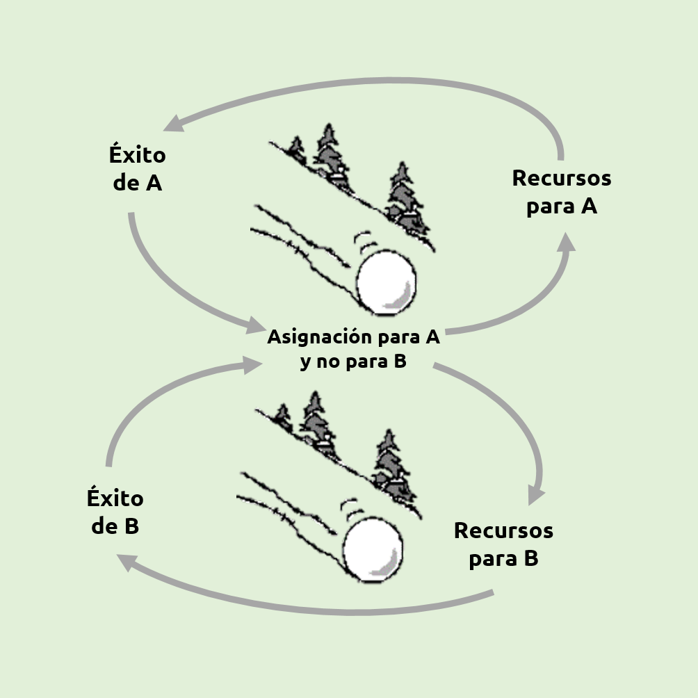
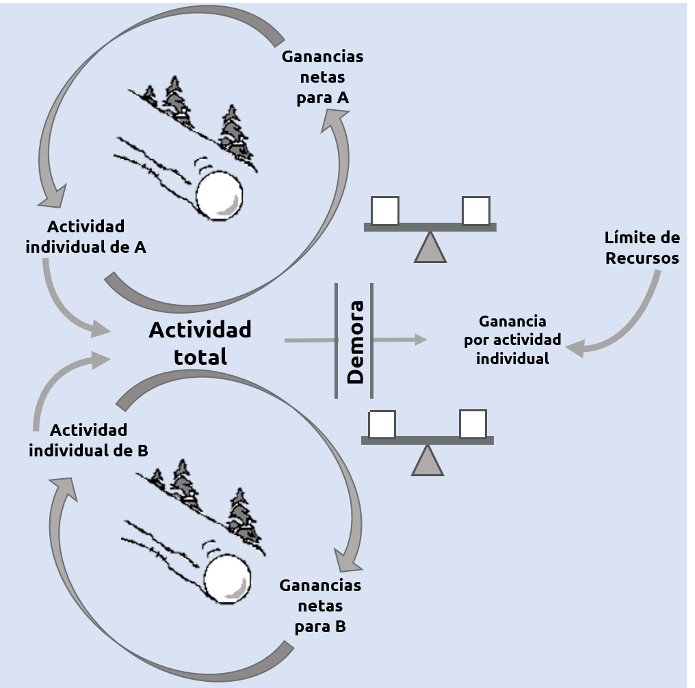
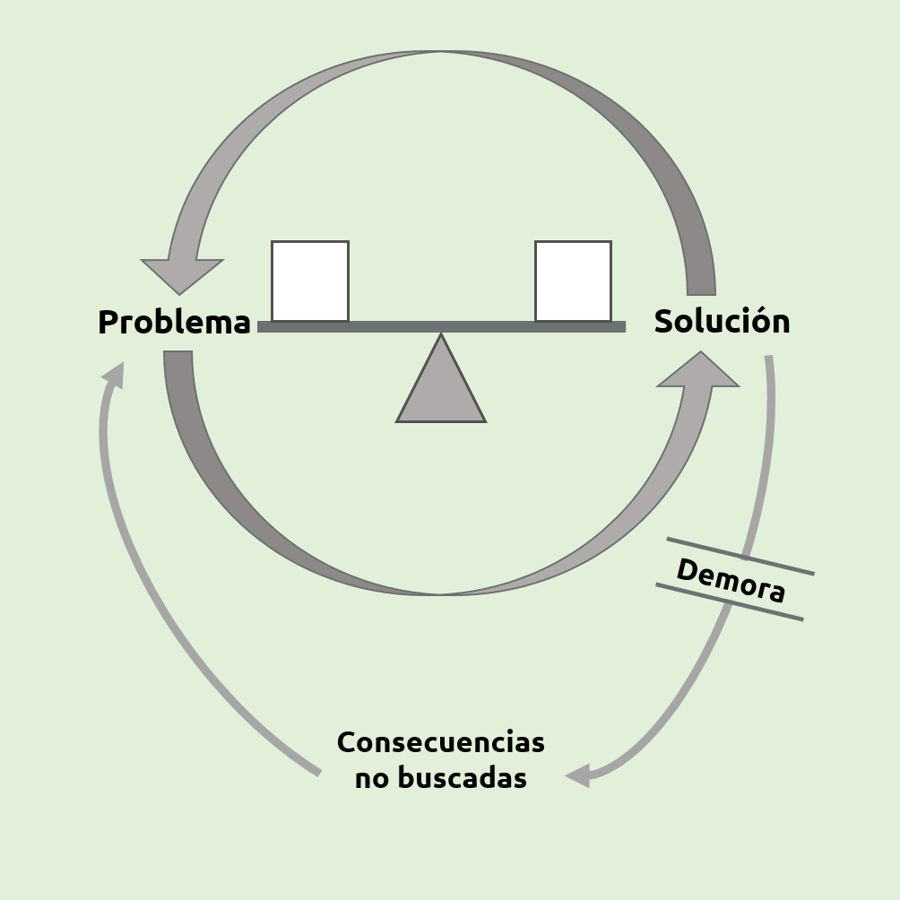
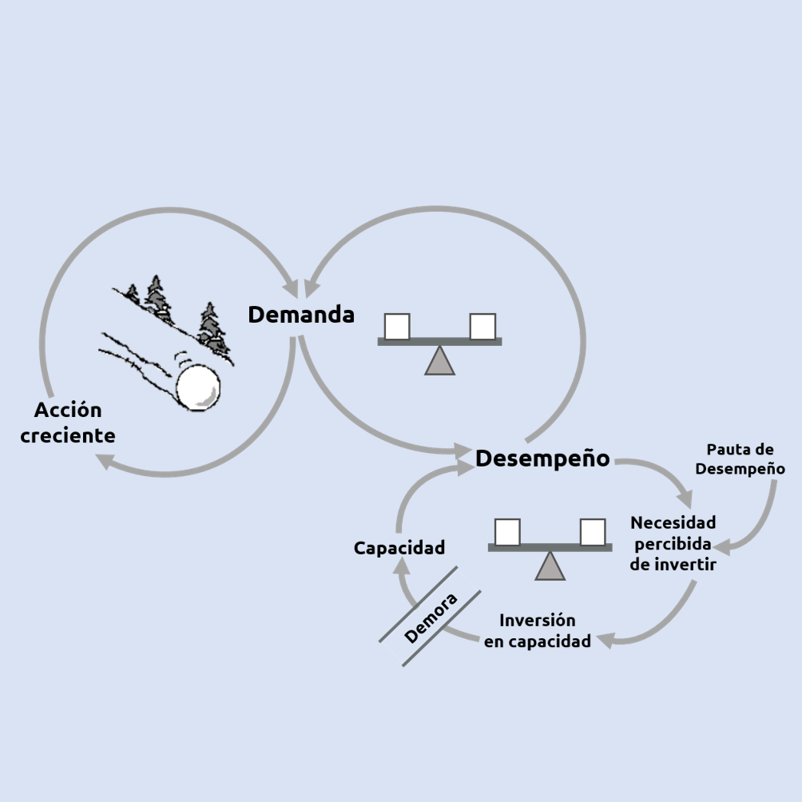

ARQUETIPOS SISTÉMICOS
Los arquetipos de sistemas fueron desarrollados en Innovation Associates a mediados de los años ochenta. Charles Kiefer, el Presidente de I.A., sugirió el tratar de comunicar los conceptos mas simplemente. Jennifer Kemeny (con Michael Goodman y Peter Senge, basados en parte en las notas desarrolladas por John Sterman) desarrolló ocho diagramas que ayudarían a ilustrar los comportamientos mas comúnmente vistos.
Los Arquetipos son:
| 1 | : | COMPENSACIÓN ENTRE PROCESO Y DEMORA |
| 2 | : | LIMITES DEL CRECIMIENTO |
| 3 | : | DESPLAZAMIENTO DE LA CARGA |
| 4 | : | CASO ESPECIAL: DESPLAZAMIENTO DE LA CARGA HACIA LA INTERVENCIÓN |
| 5 | : | EROSIÓN DE METAS |
| 6 | : | ESCALADA |
| 7 | : | ÉXITO PARA QUIEN TIENE ÉXITO |
| 8 | : | TRAGEDIA DEL TERRENO COMÚN |
| 9 | : | SOLUCIONES RÁPIDAS QUE FALLAN |
| 10 | : | CRECIMIENTO Y SUBINVERSIÓN |
Arquetipos
La palabra viene del griego Archetypos, que significa "modelo primitivo u original". Un hijastro del pensamiento de sistemas, los arquetipos de sistemas fueron desarrollados en Innovation Associates a mediados de los años ochenta. Jennifer Kemeny desarrolló ocho diagramas que ayudarían a ilustrar los comportamientos mas comúnmente vistos.
-
d
COMPENSACIÓN ENTRE PROCESO Y DEMORA
Una persona, un grupo o una organización, actuando con miras a una meta, adaptan su conducta en respuesta a la realimentación demorada. Si no son conscientes de la demora, realizan más acciones correctivas de las necesarias o a veces desisten por que no ven ningún progreso.
-
d
LIMITES DEL CRECIMIENTO
Un proceso se alimenta de sí mismo para producir un período de crecimiento o expansión acelerada. Luego el crecimiento se vuelve más lento (a menudo en forma inexpìcable para quienes participan en el sistema) y puede detenerse o se revierte e inicia un colapso acelerado. La fase de crecimiento es causada por uno o varios procesos de realimentación reforzadora. La desaceleración surge por un proceso compensador que se activa cuando se llega a un "límite". El límite puede ser una restricción en los recursos, o una reacción externa o interna ante el crecimiento. El colapso acelerado (cuando ocurre)surge del proceso reforzador que se revierte, generando cada vez más contracción.
-
d
DESPLAZAMIENTO DE LA CARGA
Se usa una "solución" de corto plazo para corregir un problema, con resultados inmediatos aparentemente positivos. A medida que esta corrección se usa cada vez más, las medidas correctivas fundamentales se aplican cada vez menos. Con el tiempo, las aptitudes para la solución fundamental se atrofian, creando mayor dependencia respecto de la solución sintomática.
-
d
DESPLAZAMIENTO DE LA CARGA HACIA LA INTERVENCIÓN
Las estructuras de desplazamiento de la carga son tan comunes y perniciosas en caso de intervención externa que merecen una atención especial. La intervención procura aliviar síntomas de problemas obvios, y lo hace tan bien que los integrantes del sistema jamás aprenden a afrontar los problemas.
-
d
EROSION DE METAS
Una estructura de desplazamiento de la carga donde la solución de corto plazo significa el deterioro de una meta fundamental de largo plazo.
-
d
ESCALADA
Dos personas u organizaciones entienden que su bienestar depende de una ventaja relativa de una sobre la otra. Cuando una se adelanta, la otra se siente amenazada y actúa con mayor agresividad para recobrar su ventaja, los cual amenaza a la primera, aumentando su agresividad, y así sucesivamente. A menudo cada parte ve su conducta agresiva como una reacción defensiva ante la agresión de la otra; pero la "defensa" de cada parte deriva de una escalada que escapa a la voluntad de ambas.
-
d
ÉXITO PARA QUIEN TIENE ÉXITO
Dos actividades compiten por recursos limitados. A mayor éxito, mayor respaldo, con lo cual la otra se queda sin recursos.
-
d
TRAGEDIA DEL TERRENO COMÚN
Los individuos utilizan un recurso común pero limitado reparando únicamente en las necesidades individuales. Al principio son recompensados, pero eventualmente hay una disminución en las ganancias, lo cual les induce a intensificar los esfuerzos. Al final agotan o erosionan el recurso.
-
d
APAGUEN ESE INCENDIO
Una solución eficaz en el corto plazo tiene consecuencias de largo plazo imprevistas que requieren más uso de la misma solución.
-
d
CRECIMIENTO Y SUBINVERSIÓN
El crecimiento se aproxima a un límite que se puede eliminar o desplazar hacia el futuro si la empresa o individuo invierte en "capacidad" adicional. Pero la inversión debe ser intensa y rápida para impedir la reducción del crecimiento, pues de lo contrario no se hará nunca. A menudo las metas decisivas o las pautas de desempeño se rebajan para justificar la subinversión. Cuando esto ocurre, hay una profecía autopredictiva donde las metas más bajas conducen a expectativas más bajas, que luego se traducen en un mal desempeño causado por la subinversión.
Características y usos
Estos son algunos de los usos y características más específicas de cada arquetipo.
-

COMPENSACIÓN ENTRE PROCESO Y DEMORA
-

LIMITES DEL CRECIMIENTO
-

DESPLAZAMIENTO DE LA CARGA
-

CASO ESPECIAL: DESPLAZAMIENTO DE LA CARGA HACIA LA INTERVENCIÓN
-

EROSIÓN DE METAS
-

ESCALADA
-

ÉXITO PARA QUIEN TIENE ÉXITO
-

TRAGEDIA DEL TERRENO COMÚN
-

SOLUCIONES RÁPIDAS QUE FALLAN
-

CRECIMIENTO Y SUBINVERSIÓN
{kind=link}
{kind=link}
{kind=link}
{kind=link}
{kind=link}
{kind=link}
{kind=link}
{kind=link}
{kind=link}
{kind=link}
Ejemplos
Una ducha donde el agua caliente reacciona con lentitud ante los cambios de la posición del grifo; ciclos de saturación y escasez en producción/distribución (como en el juego de la cerveza); ciclos en las tasas de producción e inventario de procesos debido a largos ciclos de manufacturación.
1. COMPENSACIÓN ENTRE PROCESO Y DEMORA
Al adquirir una nueva destreza, como el tenis, progresamos rápidamente al principio, al ganar competencia y confianza, pero luego nos topamos con límites a nuestra aptitud natural, los cuales sólo se pueden superar aprendiendo nuevas técnicas que al principio se adquieren con "menos naturalidad".
2. LIMITES DEL CRECIMIENTO
Vender más a clientes existentes en vez de ampliar la clientela; pagar cuentas mediante pedidos de préstamos, en vez de someterse a la disciplina de un presupuesto; usar alcohol, drogas o incluso algo tan benéfico como el ejercicio para aliviar el estrés laboral, sin enfrentar la necesidad de controlar la carga laboral; y cualquier adicción a cualquier cosa en cualquier parte.
3. DESPLAZAMIENTO DE LA CARGA
Dependencia respecto de contratistas externos y no de personal interno. Muchas formas de asistencia gubernamental que procuran resolver problemas urgentes y sólo alientan la dependencia y la necesidad de incrementar la asistencia
4. CASO ESPECIAL: DESPLAZAMIENTO DE LA CARGA HACIA LA INTERVENCIÓN
Personas de éxito que reducen sus expectativas sobre sí mismas y que gradualmente tienen menos éxito. Firmas que tácitamente reducen sus pautas de calidad mediante reducciones de presupuesto, en vez de invertir en el desarrollo de una calidad más elevada (quizá con costos más reducidos) para hacer las cosas, proclamando entretanto sus compromisos con la calidad.
5. EROSIÓN DE METAS
Guerras de publicidad. Creciente recurrencia a los abogados para resolver disputas. Guerras de pandillas. La ruptura de un matrimonio. Estimaciones infladas de presupuesto. La batalla para ser escuchado por el presidente de una compañía.
6. ESCALADA
Equilibrio entre la vida familiar y laboral, donde alguien dedica horas excesivas al trabajo y las relaciones familiares se deterioran, con lo cual se vuelve más "doloroso" regresar a casa, lo cual aumenta las posibilidades de seguir descuidando la vida familiar.
7. ÉXITO PARA QUIEN TIENE ÉXITO
Agotamiento de un equipo compartido de secretarias. El agotamiento de un recurso natural cuando varias compañías lo explotan. Todos los problemas de contaminación, desde la lluvia ácida hasta el agotamiento del ozono y el efecto invernáculo.
8. TRAGEDIA DEL TERRENO COMÚN
Personas y organizaciones que piden préstamos para pagar el intereses de otros préstamos, con lo cual tendrán que pagar más intereses más tarde. Reducción de planes de mantenimiento para ahorrar en costos, lo cual conduce eventualmente a más fallos y costos más elevados, creando más presiones para reducir costos.
9. SOLUCIONES RÁPIDAS QUE FALLAN
Compañías que dejan decaer la calidad de los servicios o los productos, culpando a la competencia o la gerencia de ventas por no empeñarse en mantener las ventas. Personas con magníficas visiones que no evalúan de modo realista el tiempo y el esfuerzo que deben dedicar al logro de la visión.
10. CRECIMIENTO Y SUBINVERSIÓN
Actividad
Responde las preguntas moviendo el cuadro blanco con las flechas de dirección. Las respuestas se encuentran coloreadas, toca el punto que corresponda al color que tiene la respuesta a la pregunta. No te preocupes si chocas con una pared, el cuadro rebotará, sólo ten cuidado de no tocar un punto con la respuesta incorrecta. Por cada respuesta correcta, la velocidad aumentará. ¡Suerte!
Conócenos
Somos Tangy Software Development.
Un grupo de desarrolladores de software de todo tipo. Nos preocupamos por que nuestros productos proporcionen una gran experiencia de usuario y se mantenga la seguridad en el uso de la información de nuestros clientes.
Nuestro grupo se formó en la Universidad Autónoma de Querétaro en la Facultad de Informática en la clase de sistemas informáticos para la alta dirección.


u
sarai.gil.ramos12@gmail.comu
nairedriaj@hotmail.comR
Universidad Autónoma de Querétaro
Facultad de Informática
Tópico III. Sistemas Informáticos para la Alta Dirección